7 Housing: Denmark
gam_adjust = function(data) {
# data = BYGV80 %>% ungroup() %>% filter(PROPERTY_TYPE=="Parcel-/rækkehuse",STAT=="Tilladt byggeri")
# Define a function to calculate RMSE
rmse <- function(predicted, actual) {
sqrt(mean((predicted - actual)^2))
}
# Define a list of span values to test
# span_values <- seq(0.1, 2, by = 0.01)
# df_train = data %>% dplyr::mutate(INDEX=row_number())
# train_rows = caret::createDataPartition(df_train$VALUE,p = 0.9)[[1]]
# Create a placeholder for results
# results <- do.call("rbind",lapply(span_values,function(span_value) {
# model <- loess(formula = VALUE ~ INDEX, data = df_train %>% slice(train_rows), span = span_value)
# predictions <- predict(model, df_train %>% slice(-train_rows))
# rmse_value <- rmse(predictions, data$VALUE)
#
# # Append the results
# data.frame(span = span_value, RMSE = rmse_value)
# }))
fit_smooth = smooth.spline(data$DATE, data$VALUE, cv= TRUE)
# Find the best model
# best_model <- results %>%
# arrange(RMSE) %>%
# slice(1)
# Fit the best model and display the summary
# best_span <- best_model$span
# fit_smooth <- loess(formula = VALUE ~ INDEX, data = data, span = best_span)
data %>%
# dplyr::mutate(VALUE_SMOOTH=predict(fit_smooth,.)) %>%
dplyr::mutate(VALUE_SMOOTH=fit_smooth$y) %>%
dplyr::mutate(VALUE_SMOOTH_SCALED=scale(VALUE_SMOOTH,center=TRUE,scale=TRUE)) %>%
dplyr::mutate(VALUE_SCALED=scale(VALUE,center=TRUE,scale=TRUE)) %>%
dplyr::mutate(VALUE_EMA=TTR::EMA(VALUE,20)) %>%
arrange(desc(DATE)) %>%
dplyr::mutate(VALUE_CHG=VALUE-lead(VALUE)) %>%
filter(!is.na(VALUE_CHG)) %>%
arrange((DATE)) %>%
dplyr::mutate(VALUE_SUM_CHG=cumsum(VALUE_CHG)) %>%
dplyr::mutate(VALUE_SUM_CHG_SCALED=scale(VALUE_SUM_CHG,center=TRUE,scale=TRUE))
}BYGV80_meta <- dst_meta(table = "BYGV80", lang = "da")
BYGV80 <- dst_get_data(table = "BYGV80",
BYGFASE="*",
ANVENDELSE="*",
Tid="*",
lang = "da") %>%
group_by(BYGFASE,ANVENDELSE) %>%
arrange(BYGFASE,ANVENDELSE,TID) %>%
filter(ANVENDELSE %in% c("Etageboliger","Parcelhuse")) %>%
dplyr::mutate(ANVENDELSE=gsub("Etageboliger","FLAT",ANVENDELSE)) %>%
dplyr::mutate(ANVENDELSE=gsub("Parcelhuse","HOUSE",ANVENDELSE)) %>%
dplyr::rename(PROPERTY_TYPE=ANVENDELSE) %>%
dplyr::rename(STAT=BYGFASE) %>%
dplyr::rename(DATE=TID) %>%
dplyr::rename(VALUE=value) %>%
group_by(PROPERTY_TYPE,STAT) %>%
dplyr::mutate(PROPERTY_TYPE=recode(PROPERTY_TYPE, 'HOUSE'='Parcel-/rækkehuse', 'FLAT'='Ejerlejlighed')) %>%
do(gam_adjust(.))
BYG1_meta <- dst_meta(table = "BYG1", lang = "da")
BYG1 <- dst_get_data(table = "BYG1",
BRANCHE07="*",
SÆSON="*",
ART="*",
Tid="*",
lang = "da") %>%
dplyr::rename(DATE=TID) %>%
dplyr::rename(VALUE=value) %>%
filter(BRANCHE07=="F Bygge og anlæg") %>%
filter(SÆSON=="Sæsonkorrigeret") %>%
filter(ART %in% c("I alt","Nybyggeri og tilbygning i alt","Reparation og vedligeholdelse i alt")) %>%
group_by(BRANCHE07,SÆSON,ART) %>%
arrange(BRANCHE07,SÆSON,ART,DATE) %>%
do(gam_adjust(.))
PRIS90_meta <- dst_meta(table = "PRIS90", lang = "da")
PRIS90 <- dst_get_data(table = "PRIS90",
ENHED="*",
BOLTYP="*",
Tid="*",
lang = "da") %>%
dplyr::rename(DATE=TID) %>%
dplyr::rename(VALUE=value) %>%
filter(ENHED=="Indeks") %>%
do(gam_adjust(.))
BYG42_meta <- dst_meta(table = "BYG42", lang = "da")
BYG42 <- dst_get_data(table = "BYG42",
HINDEKS="*",
DINDEKS="*",
ART="*",
TAL="*",
Tid="*",
lang = "da") %>%
dplyr::rename(DATE=TID) %>%
dplyr::rename(VALUE=value) %>%
filter(DINDEKS=="Byggeomkostningsindeks i alt") %>%
filter(TAL=="Indeks") %>%
filter(ART %in% c("Materialer","Arbejdsomkostninger")) %>%
group_by( HINDEKS , DINDEKS , ART , TAL ) %>%
do(gam_adjust(.))7.1 Construction Activity
BYGV80 %>%
filter(PROPERTY_TYPE=="Parcel-/rækkehuse") %>%
# filter(DATE>=Sys.Date()-years(10)) %>%
ggplot(.,aes(x=DATE,y=VALUE_SMOOTH,color=STAT)) +
geom_line() +
geom_point(aes(y=VALUE,color=STAT)) +
# geom_point() +
facet_wrap(~STAT,scales="free") +
theme(legend.position="bottom",
axis.text.x=element_text(angle=45,hjust=1)) +
scale_y_continuous(labels = scales::number_format(big.mark=" ")) +
# scale_x_date(date_breaks = "6 months",date_labels = "%Y %b") +
scale_x_date(date_breaks = "2 years",date_labels = "%Y %b") +
# geom_vline(xintercept = seq.Date(from = dmy("01-01-2000"),to = dmy("01-01-2030"),by = "1 year"),linetype=2,alpha=0.7) +
# geom_vline(xintercept = seq.Date(from = dmy("01-08-2000"),to = dmy("01-08-2030"),by = "1 year"),linetype=2,alpha=0.8) +
theme_money_printer_go_brrr(base_size=16) 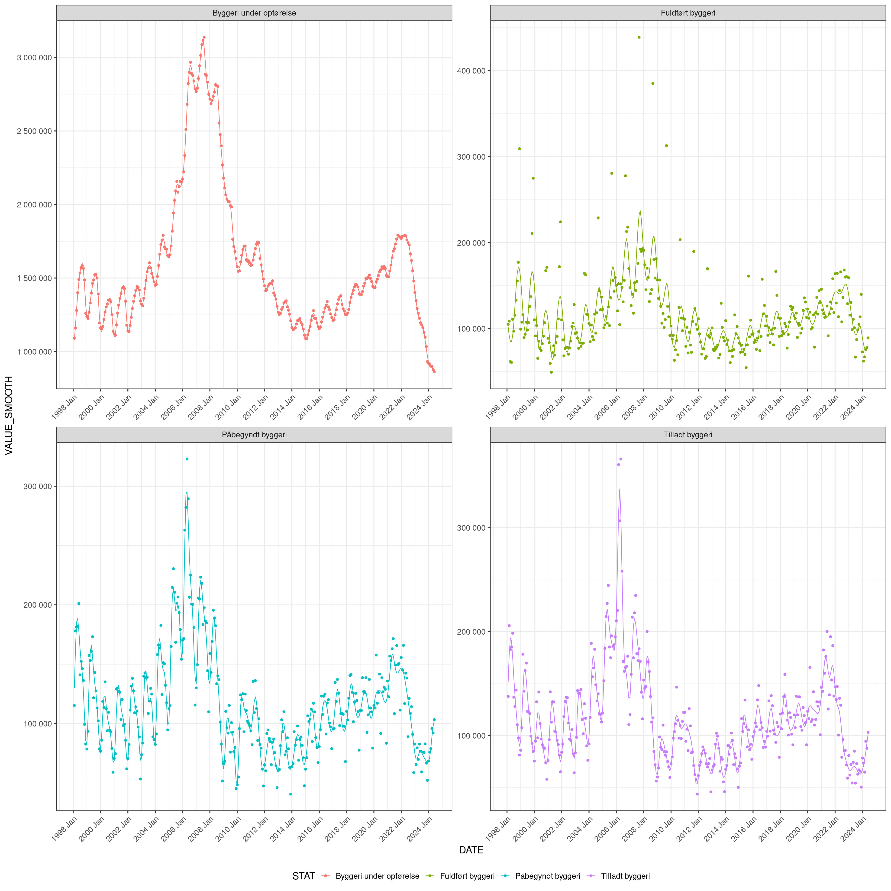
library(prophet)
m <- prophet(df = data.frame(y=data$VALUE,ds=data$DATE))
future <- make_future_dataframe(m, periods = 5*365)
forecast <- predict(m, future)
plot(m, forecast)
prophet_plot_components(m, forecast)BYGV80 %>%
filter(PROPERTY_TYPE=="Parcel-/rækkehuse") %>%
ggplot(.,aes(x=DATE,y=VALUE_SUM_CHG_SCALED,color=STAT)) +
geom_line() +
# facet_wrap(~STAT,scales="free") +
# geom_line(aes(y=VALUE_SCALED),alpha=0.3) +
theme_money_printer_go_brrr(base_size=12) +
geom_hline(yintercept = 0,linetype=2)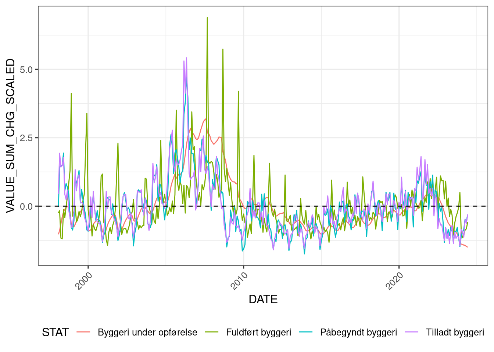
BYGV80 %>%
filter(PROPERTY_TYPE == "Ejerlejlighed") %>%
ggplot(.,aes(x=DATE,y=VALUE,color=STAT)) +
geom_point() +
geom_line(aes(x=DATE,y=VALUE_EMA),linetype=2,color="black") +
scale_x_date(date_breaks = "2 year",date_labels = "%Y") +
theme(legend.position = "bottom") +
facet_wrap(~STAT,scales = "free",ncol=1) +
scale_x_date(date_breaks = "1 year",date_labels = "%Y") +
theme(legend.position = "bottom") +
labs(title="Parcelhuse") +
geom_hline(yintercept = 0) +
geom_vline(xintercept = c(ymd("2005-04-01","2021-01-01"))) +
geom_vline(xintercept = c(ymd("2006-06-01","2022-03-31")),linetype=3) +
theme_money_printer_go_brrr(base_size=12) +
labs(title="Denmark: Flats Construction",
x=NULL,
y="(SD)",
caption = timestamp_caption())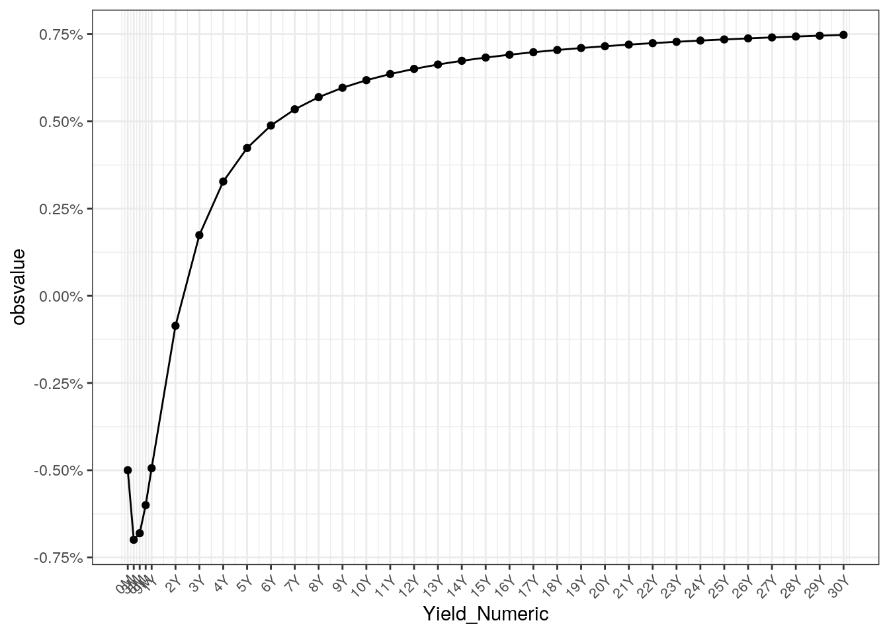
BYGV80 %>%
filter(PROPERTY_TYPE == "Parcel-/rækkehuse") %>%
ggplot(.,aes(x=DATE,y=VALUE,color=PROPERTY_TYPE)) +
geom_point() +
geom_line(aes(x=DATE,y=VALUE_EMA),linetype=2,color="black") +
scale_x_date(date_breaks = "2 year",date_labels = "%Y") +
theme(legend.position = "bottom") +
facet_wrap(~STAT,scales = "free",ncol=1) +
scale_x_date(date_breaks = "1 year",date_labels = "%Y") +
theme(legend.position = "bottom") +
labs(title="Parcelhuse") +
geom_hline(yintercept = 0) +
geom_vline(xintercept = c(ymd("2005-04-01","2021-01-01"))) +
geom_vline(xintercept = c(ymd("2006-06-01","2022-03-31")),linetype=3) +
theme_money_printer_go_brrr(base_size=12) +
labs(title="Denmark: Houses Construction",
x=NULL,
y="(SD)",
caption = timestamp_caption())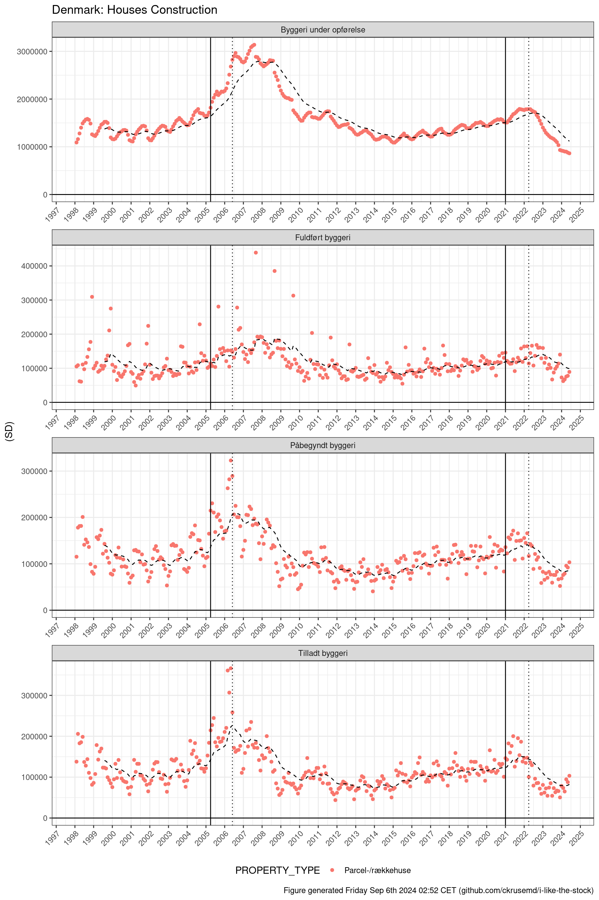
BYGV80 %>%
filter(PROPERTY_TYPE=="Parcel-/rækkehuse") %>%
ggplot(.,aes(x=DATE,y=VALUE_SMOOTH_SCALED,color=STAT)) +
geom_line() +
geom_line(aes(y=VALUE_SCALED),alpha=0.3) +
theme_money_printer_go_brrr(base_size=12)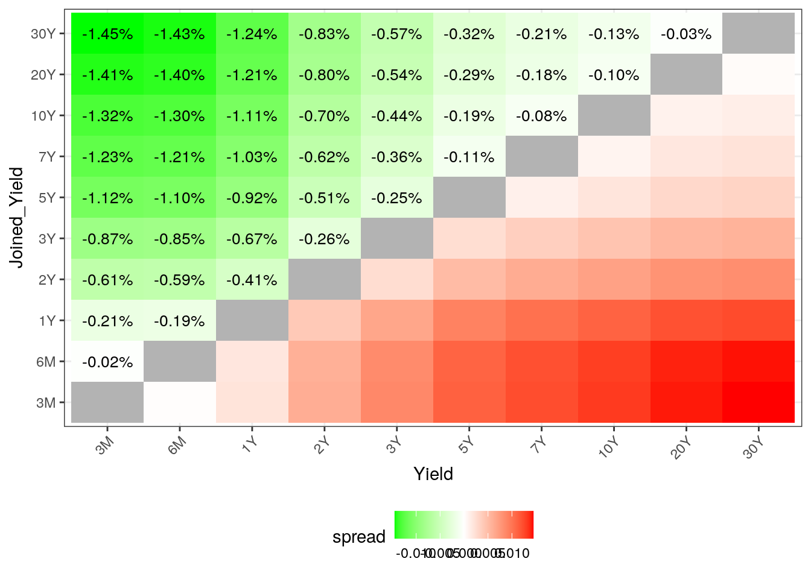
7.2 Employment
BYG1 %>%
ggplot(.,aes(x=DATE,y=VALUE_SMOOTH_SCALED,color=ART)) +
geom_point(aes(y=VALUE_SCALED)) +
geom_smooth(span=0.17) +
theme(legend.position = "bottom") +
geom_hline(yintercept = 0,linetype=2) +
theme_money_printer_go_brrr(base_size=12) +
labs(title="Denmark: Construction Employment",
x=NULL,
y="(SD)",
caption = timestamp_caption())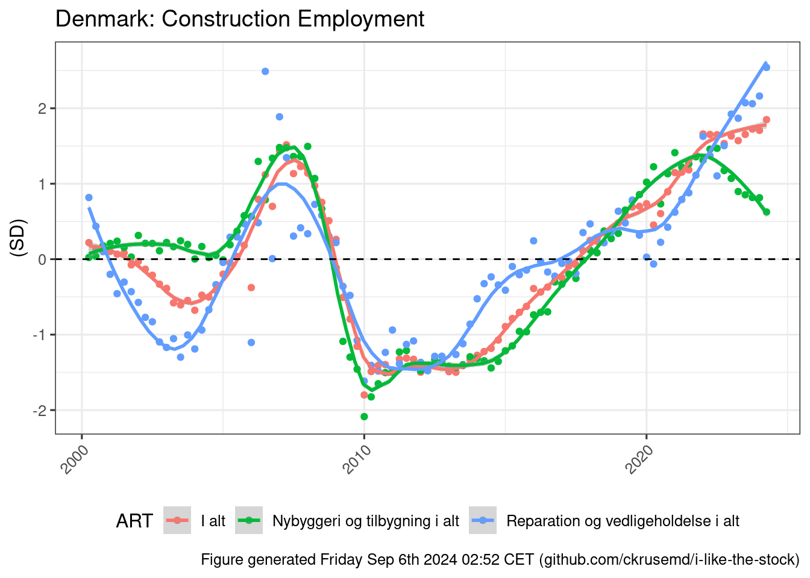
7.3 Backlog
BYGV80 %>%
filter(PROPERTY_TYPE %in% c("Parcel-/rækkehuse")) %>%
group_by(STAT) %>%
arrange(STAT,DATE) %>%
filter(STAT %in% c("Tilladt byggeri","Fuldført byggeri","Påbegyndt byggeri","Byggeri under opførelse")) %>%
dplyr::mutate(VALUE=cumsum(VALUE)) %>%
dplyr::select(PROPERTY_TYPE,STAT,DATE,VALUE) %>%
spread(STAT,VALUE) %>%
dplyr::mutate(backlogTP=`Tilladt byggeri`-`Påbegyndt byggeri`) %>%
dplyr::mutate(backlogTF=`Tilladt byggeri`-`Fuldført byggeri`) %>%
dplyr::mutate(backlogPF=`Påbegyndt byggeri`-`Fuldført byggeri`) %>%
# dplyr::mutate(backlogTB=`Byggeri under opførelse`-`Fuldført byggeri`) %>%
gather(backlog_type,backlog_value,backlogTP,backlogTF,backlogPF) %>%
# dplyr::mutate(backlog=scale(backlog,center=TRUE,scale=TRUE)) %>%
ggplot(.,aes(x=DATE,y=backlog_value,color=backlog_type)) +
geom_point(size=0.7) +
# geom_smooth(span=0.25) +
theme(legend.position = "bottom") +
geom_hline(yintercept = 0,linetype=2) +
theme_money_printer_go_brrr(base_size=12) +
geom_vline(xintercept = c(ymd("2005-04-01","2021-01-01"))) +
geom_vline(xintercept = c(ymd("2007-06-01","2022-03-31")),linetype=3) +
labs(title="Denmark: Backlog of Construction (Permits % Completed)",
x=NULL,
y="(SD)",
caption = timestamp_caption()) +
scale_x_date(date_breaks = "1 year",date_labels = "%Y")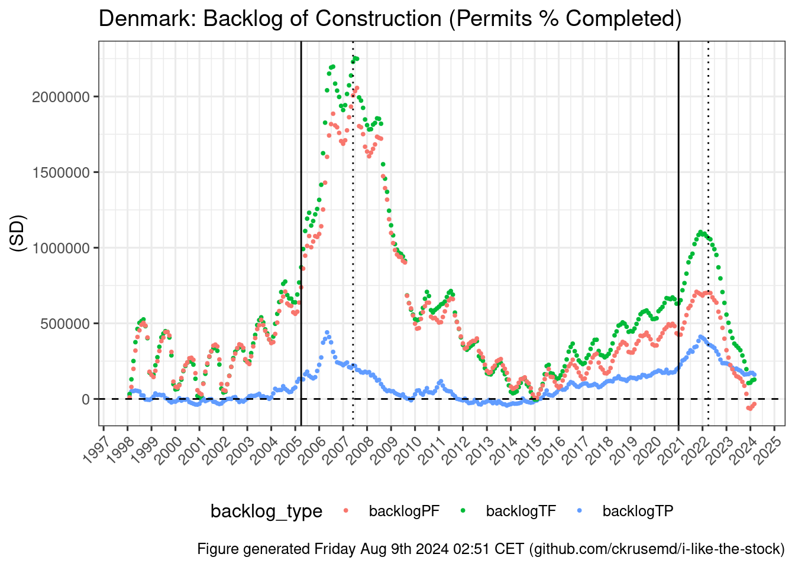
BYGV80 %>%
filter(PROPERTY_TYPE %in% c("Parcel-/rækkehuse")) %>%
group_by(STAT) %>%
arrange(STAT,DATE) %>%
filter(STAT %in% c("Tilladt byggeri","Fuldført byggeri","Påbegyndt byggeri","Byggeri under opførelse")) %>%
dplyr::mutate(VALUE_SMOOTH=cumsum(VALUE_SMOOTH)) %>%
dplyr::select(PROPERTY_TYPE,STAT,DATE,VALUE_SMOOTH) %>%
spread(STAT,VALUE_SMOOTH) %>%
dplyr::mutate(backlogTP=`Tilladt byggeri`-`Påbegyndt byggeri`) %>%
dplyr::mutate(backlogTF=`Tilladt byggeri`-`Fuldført byggeri`) %>%
dplyr::mutate(backlogPF=`Påbegyndt byggeri`-`Fuldført byggeri`) %>%
# dplyr::mutate(backlogTB=`Byggeri under opførelse`-`Fuldført byggeri`) %>%
gather(backlog_type,backlog_value,backlogTP,backlogTF,backlogPF) %>%
# dplyr::mutate(backlog=scale(backlog,center=TRUE,scale=TRUE)) %>%
ggplot(.,aes(x=DATE,y=backlog_value,color=backlog_type)) +
geom_point(size=0.7) +
# geom_smooth(span=0.25) +
theme(legend.position = "bottom") +
geom_hline(yintercept = 0,linetype=2) +
theme_money_printer_go_brrr(base_size=12) +
geom_vline(xintercept = c(ymd("2005-04-01","2021-01-01"))) +
geom_vline(xintercept = c(ymd("2007-06-01","2022-03-31")),linetype=3) +
labs(title="Denmark: Backlog of Construction (Permits % Completed)",
x=NULL,
y="(SD)",
caption = timestamp_caption()) +
scale_x_date(date_breaks = "1 year",date_labels = "%Y")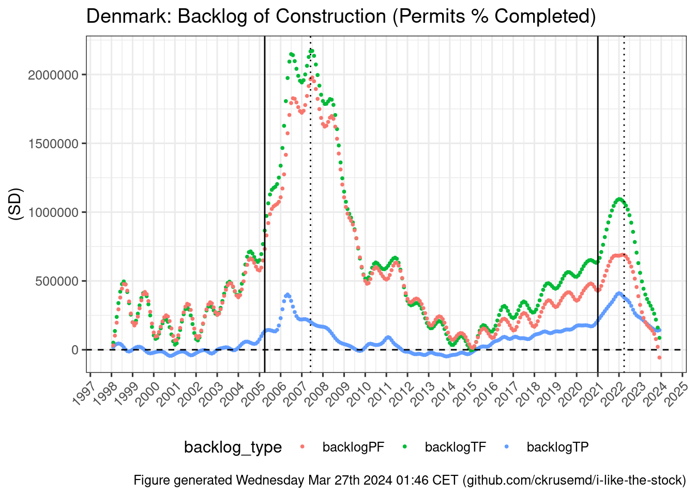
df_fp = BYGV80 %>%
filter(PROPERTY_TYPE %in% c("Parcel-/rækkehuse")) %>%
group_by(STAT) %>%
arrange(STAT,DATE) %>%
filter(STAT %in% c("Tilladt byggeri","Fuldført byggeri","Påbegyndt byggeri","Byggeri under opførelse")) %>%
dplyr::mutate(VALUE_SMOOTH=cumsum(VALUE)) %>%
dplyr::select(PROPERTY_TYPE,STAT,DATE,VALUE_SMOOTH) %>%
spread(STAT,VALUE_SMOOTH) %>%
dplyr::mutate(backlogTF=`Tilladt byggeri`-`Fuldført byggeri`) %>%
# filter(DATE>=ymd("2021-04-01")) %>%
filter(DATE>=ymd("2022-01-01"))
# lm_poly2 = lm(df_fp$backlogTF ~ poly(df_fp$DATE,2))
lm_poly2 = lm( backlogTF ~ poly(DATE,2) ,data=df_fp)
summary(lm_poly2)##
## Call:
## lm(formula = backlogTF ~ poly(DATE, 2), data = df_fp)
##
## Residuals:
## Min 1Q Median 3Q Max
## -105746 -51782 -1031 40233 95836
##
## Coefficients:
## Estimate Std. Error t value Pr(>|t|)
## (Intercept) 647761 12022 53.883 <0.0000000000000002 ***
## poly(DATE, 2)1 -1625664 58894 -27.603 <0.0000000000000002 ***
## poly(DATE, 2)2 12851 58894 0.218 0.829
## ---
## Signif. codes: 0 '***' 0.001 '**' 0.01 '*' 0.05 '.' 0.1 ' ' 1
##
## Residual standard error: 58890 on 21 degrees of freedom
## Multiple R-squared: 0.9732, Adjusted R-squared: 0.9706
## F-statistic: 381 on 2 and 21 DF, p-value: < 0.00000000000000022df_fp_extrapolate = data.frame(DATE=seq(ymd("2021-02-01"),ymd("2024-01-01"),by="1 month")) %>%
dplyr::mutate(backlogTF=predict(lm_poly2,.))
df_fp %>%
ggplot(.,aes(x=DATE,y=backlogTF)) +
geom_point() +
geom_hline(yintercept = 0,linetype=2) +
geom_vline(xintercept = ymd("2023-05-01")) +
geom_vline(xintercept = Sys.Date(),linetype=2) +
scale_x_date(date_breaks = "1 year",date_labels = "%Y",limits = c(ymd("2020-01-01"),ymd("2025-01-01"))) +
geom_line(data=df_fp_extrapolate,aes(x=DATE,y=backlogTF)) +
theme_money_printer_go_brrr(base_size=12) 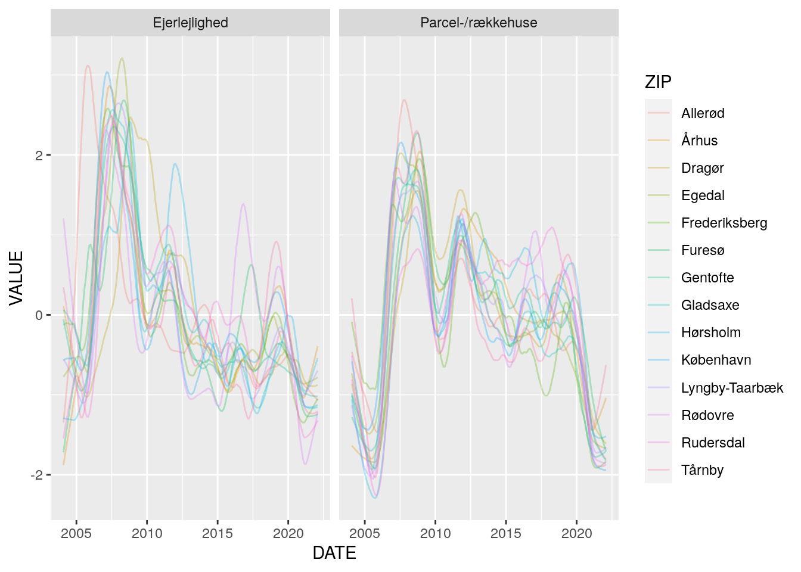
7.4 Rolling sums of changes
BYGV80 %>%
group_by(STAT,PROPERTY_TYPE) %>%
dplyr::mutate(chg=VALUE-lag(VALUE)) %>%
na.omit() %>%
dplyr::mutate(chg=cumsum(chg)) %>%
dplyr::mutate(ema=TTR::EMA(chg,n=9)) %>%
ungroup() %>%
arrange(STAT,PROPERTY_TYPE,DATE) %>%
filter(DATE>=ymd("2000-01-01")) %>%
ggplot(.,aes(x=DATE,y=ema,color=PROPERTY_TYPE)) +
geom_line() +
facet_wrap(~STAT,scales = "free",ncol=1) +
geom_hline(yintercept = 0) +
theme_money_printer_go_brrr(base_size=12) +
geom_vline(xintercept = c(ymd("2005-04-01","2021-01-01"))) +
geom_vline(xintercept = c(ymd("2006-06-01","2022-03-31")),linetype=3) +
labs(title="Rolling Sum of Changes",
x=NULL,
y=NULL,
caption = timestamp_caption())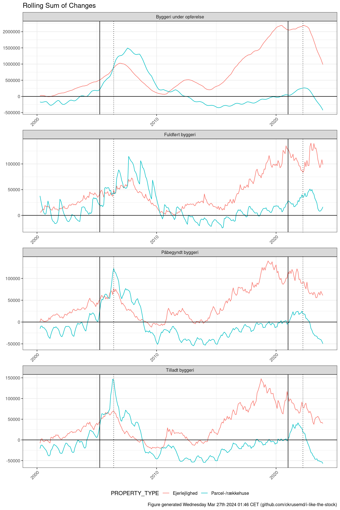
7.5 Leading/Lagging
df_ccf_BYGV80 = BYGV80 %>%
filter(PROPERTY_TYPE=="Parcel-/rækkehuse") %>%
dplyr::select(STAT,PROPERTY_TYPE,DATE,VALUE_SMOOTH) %>%
spread(STAT,VALUE_SMOOTH)7.5.1 Tilladt -> Påbegyndt
ccf_results = ccf(df_ccf_BYGV80$`Tilladt byggeri`,df_ccf_BYGV80$`Påbegyndt byggeri`,lag.max = 3650,plot = FALSE)
plot(ccf_results)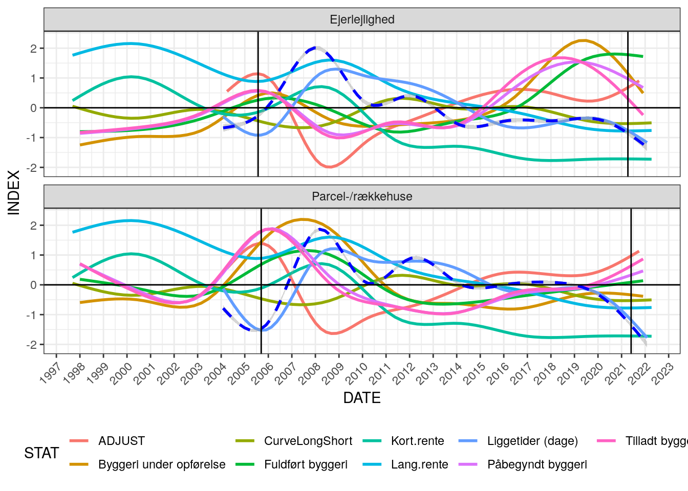
best_corr_index = which(abs(ccf_results$acf)==max(abs(ccf_results$acf)))
ccf_results$lag[best_corr_index]## [1] -1 ccf_results$acf[best_corr_index]## [1] 0.97559317.5.2 Påbegyndt -> Under opførelse
ccf_results = ccf(df_ccf_BYGV80$`Påbegyndt byggeri`,df_ccf_BYGV80$`Byggeri under opførelse`,lag.max = 3650,plot = FALSE)
plot(ccf_results)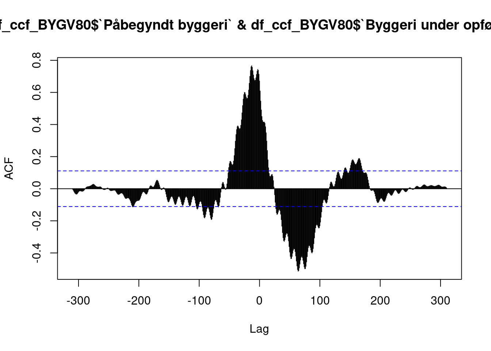
best_corr_index = which(abs(ccf_results$acf)==max(abs(ccf_results$acf)))
ccf_results$lag[best_corr_index]## [1] -13 ccf_results$acf[best_corr_index]## [1] 0.76587677.5.3 Under opførelse -> Fuldført Byggeri
ccf_results = ccf(df_ccf_BYGV80$`Byggeri under opførelse`,df_ccf_BYGV80$`Fuldført byggeri`,lag.max = 3650,plot = FALSE)
plot(ccf_results)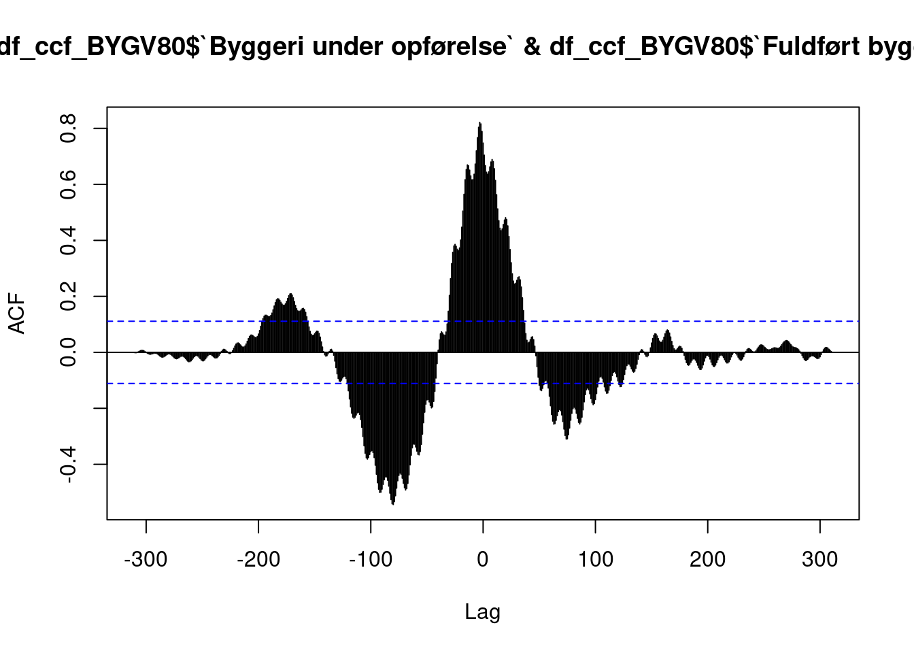
best_corr_index = which(abs(ccf_results$acf)==max(abs(ccf_results$acf)))
ccf_results$lag[best_corr_index]## [1] -3 ccf_results$acf[best_corr_index]## [1] 0.82148387.5.4 Tilladt -> Fuldført
ccf_results = ccf(df_ccf_BYGV80$`Tilladt byggeri`,df_ccf_BYGV80$`Fuldført byggeri`,lag.max = 3650,plot = FALSE)
plot(ccf_results)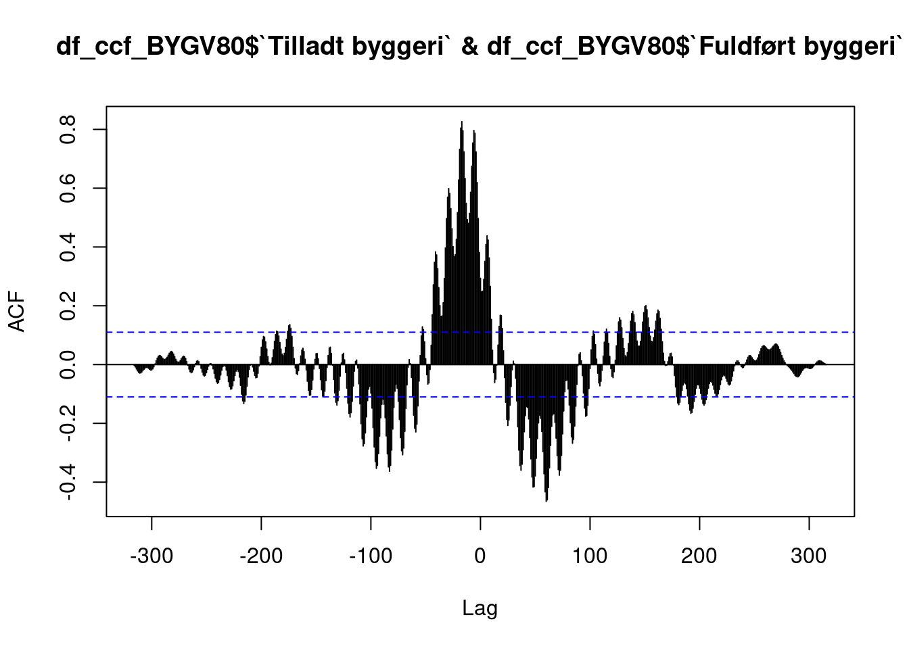
best_corr_index = which(abs(ccf_results$acf)==max(abs(ccf_results$acf)))
ccf_results$lag[best_corr_index]## [1] -17 ccf_results$acf[best_corr_index]## [1] 0.82069347.5.5 Recent developments
BYGV80 %>%
filter(PROPERTY_TYPE=="Parcel-/rækkehuse") %>%
# filter(DATE>=Sys.Date()-years(10)) %>%
ggplot(.,aes(x=DATE,y=VALUE_SMOOTH,color=STAT)) +
geom_line() +
geom_point(aes(y=VALUE,color=STAT)) +
# geom_point() +
facet_wrap(~STAT,scales="free") +
theme(legend.position="bottom",
axis.text.x=element_text(angle=45,hjust=1)) +
scale_y_continuous(labels = scales::number_format(big.mark=" ")) +
# scale_x_date(date_breaks = "6 months",date_labels = "%Y %b") +
scale_x_date(date_breaks = "2 years",date_labels = "%Y %b") +
# geom_vline(xintercept = seq.Date(from = dmy("01-01-2000"),to = dmy("01-01-2030"),by = "1 year"),linetype=2,alpha=0.7) +
# geom_vline(xintercept = seq.Date(from = dmy("01-08-2000"),to = dmy("01-08-2030"),by = "1 year"),linetype=2,alpha=0.8) +
theme_money_printer_go_brrr(base_size=12) 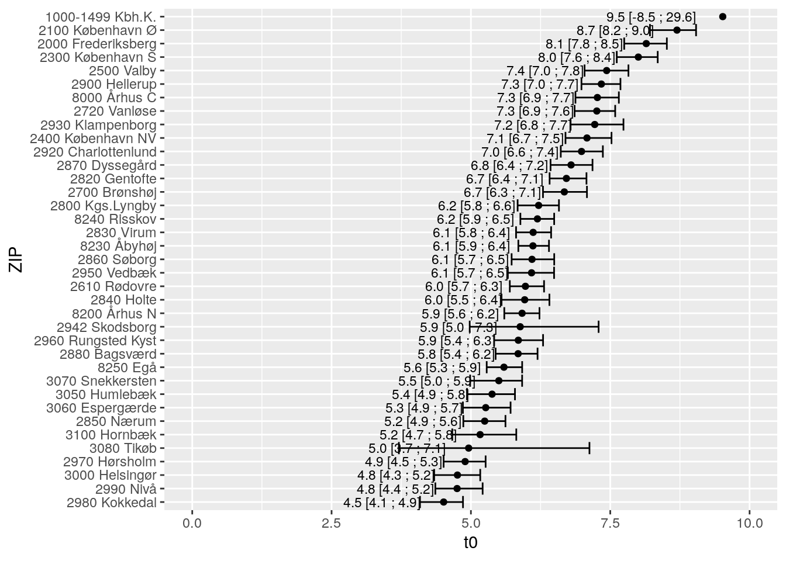
BYGV80 %>%
filter(PROPERTY_TYPE=="Parcel-/rækkehuse") %>%
filter(DATE>=Sys.Date()-years(5)) %>%
ggplot(.,aes(x=DATE,y=VALUE,color=STAT)) +
geom_line() +
geom_point() +
facet_wrap(~STAT,scales="free") +
theme(legend.position="bottom") +
scale_y_continuous(labels = scales::number_format(big.mark=" ")) +
scale_x_date(date_breaks = "1 year",date_labels = "%Y") +
theme_money_printer_go_brrr(base_size=16) 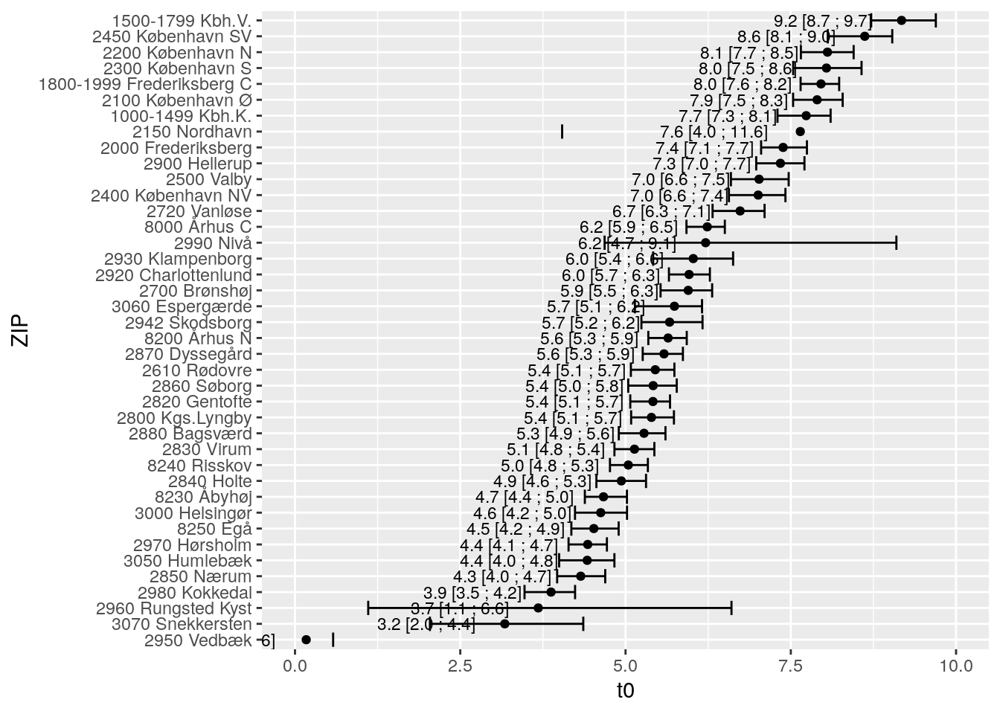
7.6 Model future completed construction
library(randomForest)
df_fit = BYGV80 %>%
dplyr::select(DATE,STAT,PROPERTY_TYPE,VALUE) %>%
filter(PROPERTY_TYPE=="Parcel-/rækkehuse") %>%
group_by(STAT) %>%
dplyr::mutate(DATE=as.Date(ifelse(STAT=="Påbegyndt byggeri",DATE+years(1),DATE))) %>%
spread(STAT,VALUE) %>%
na.omit() %>%
dplyr::mutate(PROPERTY_TYPE=factor(PROPERTY_TYPE)) %>%
data.frame()
fit_tilladt_byggeri = caret::train(x = df_fit %>% dplyr::select(-DATE,-Fuldført.byggeri),
y = df_fit$Fuldført.byggeri,
method="rf")
BYGV80 %>%
dplyr::select(DATE,STAT,PROPERTY_TYPE,VALUE) %>%
filter(PROPERTY_TYPE=="Parcel-/rækkehuse") %>%
spread(STAT,VALUE) %>%
dplyr::mutate(PROPERTY_TYPE=factor(PROPERTY_TYPE)) %>%
data.frame() %>%
dplyr::mutate(VALUE=predict(fit_tilladt_byggeri,.)) %>%
dplyr::mutate(DATE=DATE+years(1)) %>%
ggplot(.,aes(x=DATE,y=VALUE)) +
geom_line() +
geom_vline(xintercept = Sys.Date()) +
geom_line(data=df_fit,aes(x=DATE,y=Fuldført.byggeri),color="red")